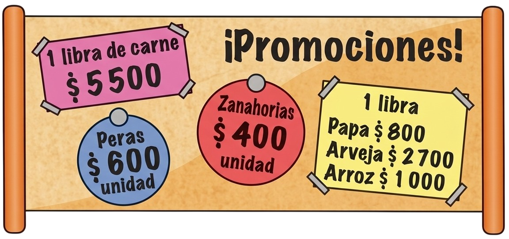

➕ Suma y Resta · Guía 2 · Matemáticas 6º ➖
EDER DAVID SEQUEDA MARTINEZ
Ingeniero Civil
Docente: Matemáticas – Geometria – Estadística – Física
Operaciones entre Números Naturales
En el conjunto de los números naturales se definen las siguientes operaciones: adición, sustracción, multiplicación, división, potenciación, radicación y logaritmación.
Adición o Suma de números naturales
La adición de números naturales es una operación que permite solucionar situaciones en las que se realizan actividades como agregar, agrupar o comparar. En esta operación los números a sumar reciben el nombre de sumandos y al resultado se le denomina suma.
El término "reagrupar" indica lo mismo que "llevar", y se basa en el hecho de que en el sistema de numeración decimal cada 10 unidades de un orden forman una unidad del orden siguiente. Así, 10 unidades corresponden a una decena, 10 decenas conforman una centena, 10 centenas forman una unidad de mil, etc.
Ejemplo:
Lina va de Bogotá a Buenos Aires por una aerolínea y recorre 4699 km. Una vez allí, toma otro avión que la conduce a Lima, volando esta vez 3151 km. Finalmente, en Lima toma un vuelo de regreso a Bogotá y vuela 1893 km.
¿Cuántos kilómetros voló Lina en total?
Para saber cuántos kilómetros voló Lina en total en los tres trayectos, se debe efectuar una adición.
1. Se suman las unidades.
9 + 1 + 3 = 13 El 13 se reagrupa en 3 unidades y 1 decena, esta última se suma en la columna correspondiente.
9 + 1 + 3 = 13 El 13 se reagrupa en 3 unidades y 1 decena, esta última se suma en la columna correspondiente.
1
4 6 9 9 2 1
4 6 9 9
+ 3 1 5 1
1 8 9 3
3
2. Se suman las decenas, incluida la que se reagrupó. 1 + 9 + 5 + 9 = 24.
Las 24 decenas que se obtienen se reagrupan en 4 decenas y 2 centenas. Se escriben las 4 decenas y se reagrupan 2 centenas en la columna correspondiente.
+ 3 1 5 1
1 8 9 3
4 3
3. Se suman las centenas, incluidas las 2 que se reagruparon.
2 + 6 + 1 + 8 = 17
Las 17 centenas se reagrupan en 1 unidad de mil y 7 centenas, que se escriben en la columna que corresponde.
2 + 6 + 1 + 8 = 17
Las 17 centenas se reagrupan en 1 unidad de mil y 7 centenas, que se escriben en la columna que corresponde.
1 2 1
4 6 9 9 1 2 1
4 6 9 9
+ 3 1 5 1
1 8 9 3
7 4 3
4. Unidades de mil, incluyendo la que se reagrupó: 1 + 4 + 3 + 1 = 9.
+ 3 1 5 1
1 8 9 3
9 7 4 3
Lina voló en total 9.743 km.
Propiedades de la adición
La adición de números naturales satisface las siguientes propiedades:
• Clausurativa: La suma de dos números naturales es otro número natural.
• Conmutativa: La suma de dos números naturales no varía si se cambia el orden de los sumandos. Por ejemplo, 4 + 2 = 2 + 4.
• Asociativa: Tres o más sumandos pueden agruparse de diferentes maneras y la suma no cambia. Por ejemplo, (2 + 3) + 4 = 2 + (3 + 4).
• Modulativa: La suma de cualquier número natural y 0 es igual al mismo número natural. Por ejemplo, 5 + 0 = 5.
EJEMPLOS:
Para hallar el resultado o suma de 345 + 986 + 635 + 114 se pueden usar de manera conveniente las propiedades de la adición.
345 + 986 + 635 + 114 = 345 + 635 + 986 + 114Prop. Conmutativa
=(345 + 635) + (986 + 114)Prop. Asociativa
=980 + 1100Prop. Clausurativa
=2080
=(345 + 635) + (986 + 114)Prop. Asociativa
=980 + 1100Prop. Clausurativa
=2080
1. En una gran industria había 846 empleados.

Luego, se produjo una expansión de sus instalaciones y 328 empleados nuevos fueron contratados. ¿Cuántos empleados hay ahora en la industria?
Para resolver el problema se identifican los datos conocidos:
846: cantidad inicial de empleados.
328: cantidad de empleados nuevos contratados.
Luego, se plantea la opración y se resuelve:
846 + 328 = 1.1742. Realizar la siguiente adición 7.542.600 + 3.135.590. Para resolver la adición, se descomponen los sumandos y se aplica la propiedad asociativa.
• 7.542.600 = 7.000.000 + 542.000 + 600
• 3.135.590 = 3.000.000 + 135.000 + 590
• 7.542.600 + 3.135.590 = 7.000.000 + 3.000.000 + 542.000 + 135.000 + 600 + 590
Luego, se realizan las adiciones parciales, así:
• 7.542.600 + 3.135.590 = 10.000.000 + 677.000 + 1.190 = 10.678.190
Por tanto, 7.542.600 + 3.135.590 = 10.678.190.
Sustracción o Resta de Números Naturales
Es la operación inversa a la adición y es por la cual se determina la diferencia, es decir, en cuánto es mayor un número, llamado minuendo, con respecto a otro, denominado sustraendo.
En el proceso de sustracción se debe desagrupar siempre que sea necesario.
EJEMPLOS:
1. Hay 395 654 animales en una reserva forestal y 683 732 en otra. ¿Cuál de las dos reservas tiene mayor número de animales? ¿Cuántos más? Para responder, debemos efectuar la sustracción 683 732 — 395 654.
6 8 3 7 3 2
- 3 9 5 6 5 4
2 8 8 0 7 8
- 3 9 5 6 5 4
2 8 8 0 7 8
Hay 288.078 animales más en la segunda reserva que en la primera.
2. Calcula en cuánto es mayor 8 738 que 1 376.
El problema se resuelveefectuando la operación: 8 738 - 1 376
8 7 3 8
Minuendo
- 1 3 7 6 Sustraendo
7 3 6 2 Diferencia
- 1 3 7 6 Sustraendo
7 3 6 2 Diferencia
Por lo tanto, 8.738 supera a 1.376 en 7.362.
Suma y Resta de Números Naturales
En algunas expresiones aparecen, de forma combinada, la suma y la resta. Ambas operaciones tienen la misma prioridad y se realizan según van apareciendo de izquierda a derecha.
Por ejemplo, 145 - 89 + 44 - 75.
Primero, se resta 145 - 89, luego se suma 44 y, por último, se resta 75, así:145 - 89 + 44 - 75 = 56 + 44 - 75 = 100 - 75 = 25.
145 - 89 + 44 - 75 =
EJEMPLOS:
1. Si a = 324, b = 408 y c = 207, realizar todas las restas posibles con los números naturales dados.
Como es necesario que el minuendo sea mayor que el sustraendo, entonces, con los números dados es posible realizar solamente tres restas diferentes.
b - a = 408 - 324 = 84
b - c = 408 - 207 = 201
a - c = 324 - 207 = 117
b - c = 408 - 207 = 201
a - c = 324 - 207 = 117
2. En una panadería hay 112 tortas, 64 son de maíz, 37 son de zanahoria y el resto son de chocolate. ¿Cuántas tortas de chocolate hay?
Se identifican los datos conocidos:
• 112: cantidad total de tortas.
• 64: cantidad de tortas de maíz.
• 37: cantidad de tortas de zanahoria.
Luego, la cantidad de tortas de chocolate se obtiene al restar de la cantidad total de tortas, la cantidad de tortas de maíz y de zanahoria. Es decir:
112 - (64 + 37) = 112 - 101
= 11
Por tanto, hay 11 tortas de chocolate.
3. Sara y John van a un parque de diversiones y deciden tomar una bebida diferente y comer una hamburguesa cada uno para almorzar.
| Producto | Precio |
|---|---|
| Hamburguesa | 7.550 |
| Pizza personal | 6.500 |
| Gaseosa | 1.500 |
| Limonada | 1.800 |
| Jugo en caja | 1.150 |
Si pagan con $20.000 y consumieron las bebidas más económicas según la lista de precios, ¿cuánto dinero les devolvieron?
• Cada persona tomó una bebida diferente y de las más económicas, entonces, Sara y John compraron un jugo en caja y una gaseosa. Además, cada uno consumió una hamburguesa.
Luego, la cantidad de dinero que gastaron Sara y John fue:
1.150 + 1.500 + 7.550 + 7.550 = 17.750.
Para conocer la cantidad de dinero que les devolvieron se resta lo que gastaron de los $20.000 que pagaron. Así:
• 20.000 – 17.750 = 2.250
Por tanto, la cantidad de dinero que les devolvieron a Sara y John fue $2.250.
📌 ACTIVIDADES DE APRENDIZAJE
1. Resuelve cada adición. Reagrupa cuando sea necesario.
- a.
2 5 7 8 6
+ 6 9 3 2
5 9 2 6 1
- b.
5 6 9 7
+ 4 3 5 9
2 3 7 5
- c.
1 6 3 8 4
+ 4 6 8 3 5
1 3 0 8 5 9
- d.
5 8 2 0 3
+ 7 5 3 2 2
3 2 9 5 3
- e.
6 9 7 1 4
+ 1 5 9 8 5
9 6 7 3 1
- f.
7 9 2 0 4 8
+ 5 2 6 4 9
1 8 4 9 5 3
2. Resuelve las siguientes sustracciones.
- a. 5 643 – 762
- b. 893 – 79
- c. 802 – 148
- d. 26.538 – 14.148
Verifica en cada caso que:
• Diferencia + Sustraendo = Minuendo
3. Reconstruye cada una de las operaciones, ubicando las cifras desaparecidas en cada espacio.
- a.43 + 25 + 87 = 1.068
- b.8.22 - 2.5=.555
- c.5.68 + 4.09+.856 = 13.13
- d.1.86 - 3.52 = 8.27
4. Relaciona cada adición con su respectivo resultado.
- a. 18.516 + 14.341
- i. 787.08
- b. 8.267 + 73.656
- ii. 101.975.898
- c. 747.915 + 39.167
- iii. 81.923
- d. 26.820.934 + 3.256.268
- iv. 32.857
- e. 34.408.573 + 67.567.325
- v. 30.077.202
5. Resuelve.
- a. En una biblioteca escolar hay 76.543 libros de matemáticas y 43.765 de ciencias. ¿Cuántos libros más hay de matemáticas que de ciencias?!
- b. Un almacén tiene 81.298 camisetas y vendió 45.792 durante una promoción. ¿Cuántas camisetas quedan en el almacén??
- c. Una campaña solidaria logró reunir 43.765 pesos, pero necesita llegar a 100.000 pesos para cumplir la meta. ¿Cuánto dinero falta recaudar?
- d. En un estadio asistieron 65.498 personas, pero la capacidad recomendada era de 32.987. ¿En cuántas personas se excedió el aforo?
- e. Una empresa tenía 567.894 litros de agua almacenados y después de una sequía solo quedaron 125.000 litros. ¿Cuántos litros se consumieron?
- f. Un colegio recolectó 54.987 tapas plásticas para reciclar y quiere completar 100.000. ¿Cuántas tapas le faltan por recolectar??
- g. En dos ciudades se registraron 65.434 y 34.965 habitantes respectivamente. ¿Cuál es la diferencia de población entre ambas ciudades?
- h. Un deportista ha recorrido 64.219 metros en una maratón virtual y su meta es llegar a 100.000 metros. ¿Cuántos metros le faltan??
- i. Una fábrica produjo 65.432 botellas, pero debe reducir la producción hasta llegar a 50.000. ¿Cuántas botellas debe disminuir?
- j. Una tienda tenía 78.321 juguetes y después de varias ventas quedaron 23.432. ¿Cuántos juguetes se vendieron?
- k. Una empresa dedicada a la producción de plantas exportó 563.256 orquídeas, 185.562 helechos y 368.850 rosas. ¿Cuántas plantas exportó en total?
- l. Roberto nace en 1928 y se casa a los 30 años. Dos años después nace su hija y él muere cuando ella tiene 30 años. ¿En qué año muere Roberto?
6. Observa los letreros que se encuentran en la siguiente figura y contesta las preguntas.

- a. ¿Cuánto dinero se requiere para comprar una libra de carne, tres peras, cinco zanahorias, una libra de papa, media libra de arveja y dos libras de arroz? ¿Es suficiente con $15000? Determina cuánto dinero falta o cuánto sobra.
- b. Supón que quieres comprar 3 kilogramos de arroz y 2 kilogramos de arveja. Si llevas $10000, ¿podrás hacer esa compra? Explica cuánto dinero falta o cuánto sobra en uno u otro caso.